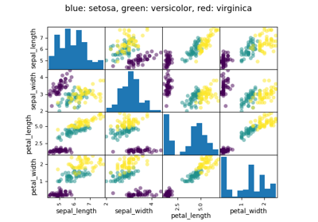
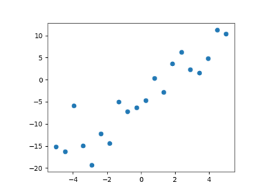
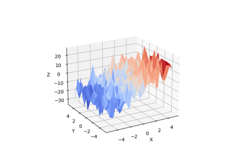
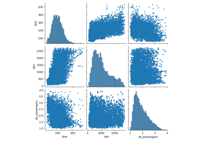

Full code for the figures¶
Code examples for the statistics chapter.



Analysis of Iris petal and sepal sizes
Analysis of Iris petal and sepal sizes

Simple Regression


Multiple Regression


Air fares before and after 9/11
Air fares before and after 9/11